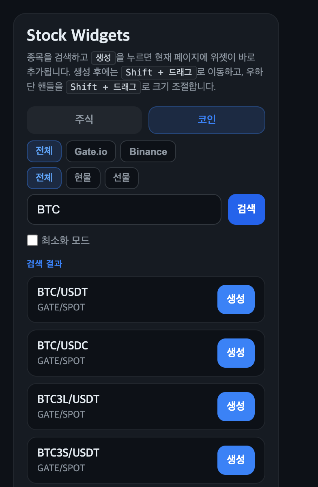
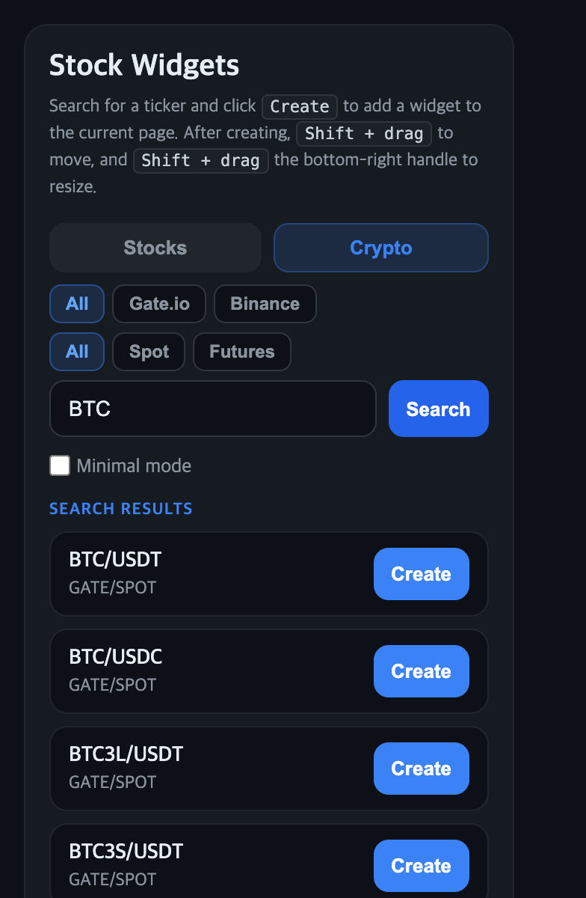
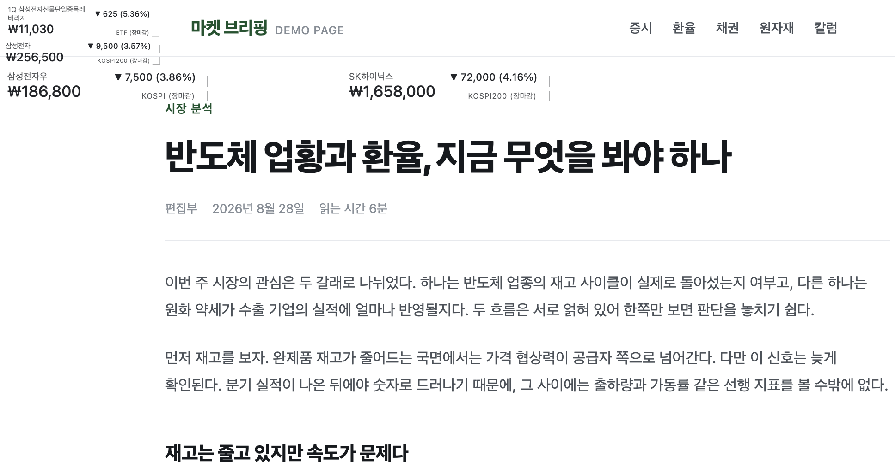
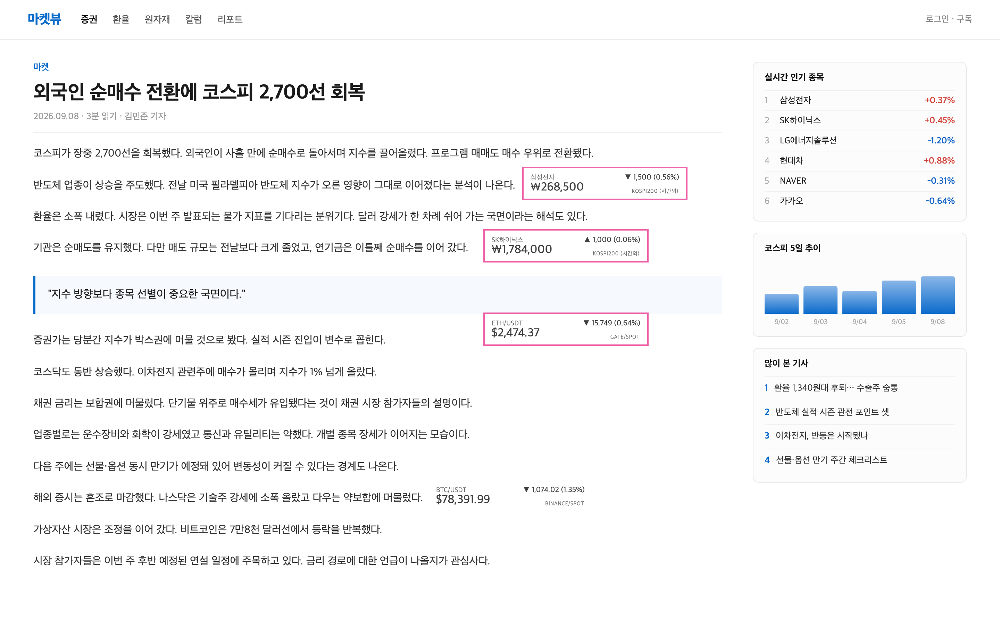
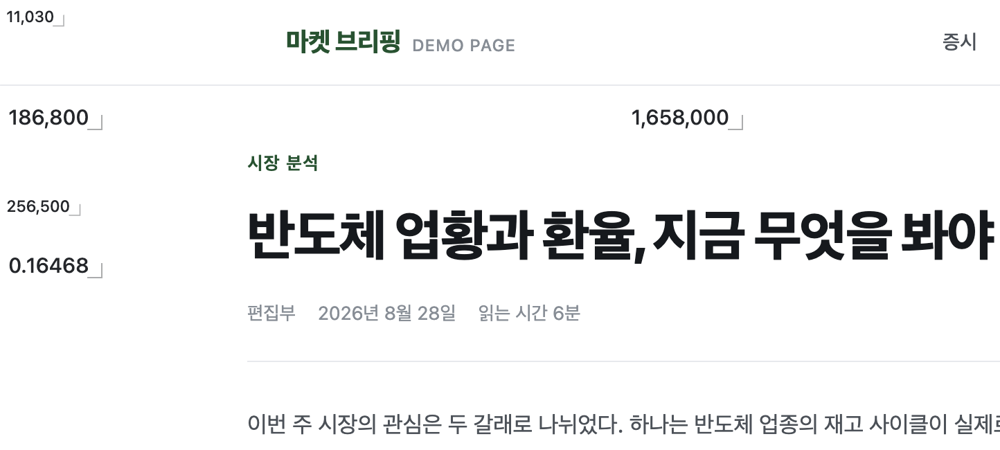

How to use
어떻게 쓰나
검색해서 만들고, 원하는 자리에 끌어다 놓으면 끝입니다.
-
종목 검색하고 위젯 만들기
확장 팝업에서 주식 / 코인 모드를 고르고 종목명이나 티커를 검색한 뒤 생성을 누릅니다.
- 국내주식 — 종목명(
삼성전자) 또는 6자리 코드(005930) - 해외주식 —
티커.거래소형식 (AAPL.NAS,NVDA.NYS) - 코인 — 심볼 검색 (
BTC-USDT)

확장 팝업 (한국어) 생성을 누르면 보고 있던 페이지에 위젯이 바로 붙습니다. 코인은 거래소·현물/선물을 좁혀 찾을 수 있습니다.
같은 화면 (영어) 같은 조작 상태를 언어만 바꿔 띄운 것입니다 — 검색어·필터·결과가 동일하고 문구와 버튼만 바뀝니다. 브라우저 언어에 따라 UI 전체가 전환됩니다. - 국내주식 — 종목명(
-
페이지 위 원하는 자리에 배치
웹페이지에서
Shift + 드래그로 위치를 잡습니다. 위젯 우측 핸들을 끌면 폭이, 우하단 핸들을 끌면 전체 크기가 조절됩니다.배치한 위젯 아래의 웹페이지는 그대로 클릭됩니다. 시세를 띄워둔 채로 하던 일을 계속할 수 있습니다.

페이지 위에 얹힌 위젯 종목마다 거래소 라벨(KOSPI200·NASDAQ·GATE·BINANCE)과 장 세션(시간외·프리장)이 함께 붙고, 24시간 거래인 코인에는 세션 표기가 없습니다. 등락은 ▲▼ 방향과 수치로 알리고, 글자색은 기본적으로 페이지 색을 물려받습니다 — 어느 사이트에 얹힐지 모르니 상승·하락에 고정 색을 박지 않았습니다. 원하면 위젯별로 색을 직접 지정할 수도 있습니다. 위젯 뒤의 기사와 사이드바는 그대로 읽히고 그대로 클릭됩니다. -
차트 열어보기
위젯을 우클릭 → 차트 열기. 직접 만든 캔들 차트가 인라인으로 열립니다.
- 주기 — 1분 / 15분 / 4시간 / 일 / 주 / 월 (주식은 1분·일·주·월)
- 지표 — 이동평균(MA 5·10·20·60·120) / EMA / 볼린저밴드 / 거래량
- 드로잉 — 추세선 · 레이 · 수평선 · 피보나치 되돌림, 자석 스냅
- 실시간 시세가 캔들에 그대로 반영되고, 크기 조절 가능

인라인 캔들 차트 위젯을 우클릭하면 페이지를 벗어나지 않고 이 자리에서 열립니다. 지표 토글·드로잉 툴바·주기 버튼이 한 줄에 모여 있고, 우하단 핸들로 크기를 조절합니다. 화면은 이동평균선·볼린저밴드·거래량을 켜고 실제 저점 두 개를 이어 추세선을 그은 상태입니다. 주식은 1분·1일·1주·1달 네 주기를 지원합니다. -
여러 개 다루기
위젯이 늘어나면 개별로 옮기기 번거로워집니다. 선택 기능으로 묶어서 다룹니다.
단축키 동작 Shift + 드래그 위젯 이동 / 핸들에서 크기 조절 Cmd·Ctrl + 클릭 개별 선택 추가·해제 Cmd·Ctrl + 드래그 빈 공간을 끌어 사각형 범위로 여러 개 선택 Shift + 드래그 (선택 후) 선택된 위젯 그룹 이동 Shift + Alt + 드래그 스냅 끄고 자유 이동 Delete 선택된 위젯 삭제 Esc 선택 해제 / 차트 닫기 
네 개 중 세 개를 선택한 상태 선택된 위젯에만 외곽선이 붙어, 이제 Shift + 드래그로 한 번에 옮길 수 있습니다. 아래쪽BTC/USDT는 선택에서 빠져 그대로 남습니다 — 마퀴 범위 밖이었습니다. -
정리하기
위젯 우클릭으로 한 위젯에 필요한 조작을 모두 꺼냅니다 — 뷰포트에 고정하기, 차트 보기, 평단가 입력, 색상 지정, 숨기기, 삭제.
팝업에서는 만들어둔 위젯 목록을 보고 위치찾기(해당 위젯으로 스크롤 + 강조), 숨기기/표시, 개별·전체 삭제를 할 수 있습니다. 가격만 크게 보고 싶으면 최소화 모드로 전환합니다.

우클릭 메뉴 한 위젯에 필요한 조작을 한자리에 모았습니다. 함께 보이는 코인 위젯( BTC/USDT)은 24시간 거래라 장 세션 표기가 없습니다.
최소화 모드 종목명·거래소·등락을 접고 가격만 남깁니다. 앞 화면과 같은 다섯 종목이고 표시만 줄인 상태입니다 — 여러 개를 띄워두고 곁눈으로 숫자만 볼 때 쓰는 모드입니다.